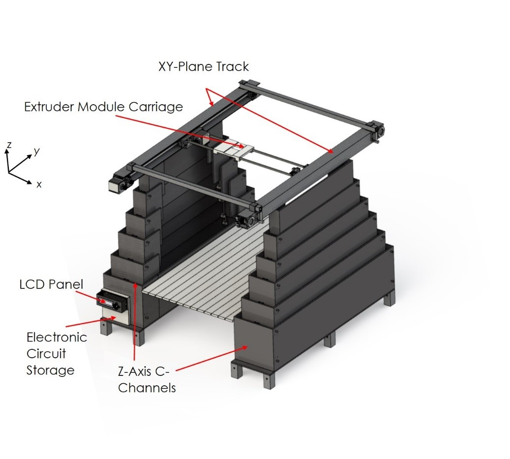
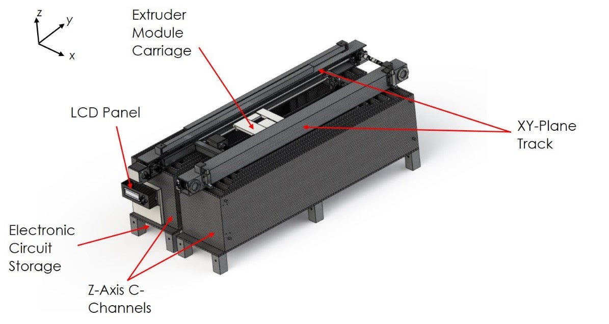

This site is an archived version of the original site.
Product Details
The Badger COMET is designed by a team at the University of Wisconsin - Madison as an in-situ manufacturing workstation. To meet this, a collapsible 3D printer capable of producing ABS material through FDM methods is designed in accordance with the 2014 X-Hab Academic Innovation Challenge to be delivered to NASA for integration into the Deep Space Habitat.
Design Objective
Badger COMET is an innovative solution to the unique set of design challenges set forth by 3D printing in space. To meet these, a lightweight, mobile, and collapsible model was designed, capable of a print volume of eight cubic feet, an overall 90% reduction in volume during collapse, enhanced electronics and safety features to enhance the overall life of system and FDM processing of ABS materials. Further objectives align with NASA standards and specifications.
Overall Design
The overall design of the Badger COMET is broken into four main subsystems and can be viewed through the links below. The current design contains two sets of collapsible axes for maximum volume reduction through use of nested c-channels to collapse the z-axis and a custom hinge assembly for collapsing along the x-axis, leaving the y-axis static. A multi-component plate connected via tensioned cables serves as the flat print surface and is removed during storage. Underneath this multi-component plate is a collapsible structure that folds parallel to the x-axis, providing additional rigidity, alignment mechanisms, and housing for the filament and electronic components. DC stepper motors controlled by a custom designed circuit and firmware actuate the extruder module in all three axes along with regulating the feed mechanism and monitoring safety and processing signals. User interaction is controlled through an installed LCD panel that allows a user to select parts, pause or cancel printing, along with selection of additional settings. The fully deployed state for the Badger COMET can be seen in rendered form below:

In its fully collapsed state, the overall volume is reduced by about 90%, creating a smaller platform for storage and movement. Different sets of mechanical locks keep the collapsed structure contained, allowing ease of movement without damage to the internal components. From this state, the system can be deployed through manual expansion of the necessary items. The fully collapsed state can be seen in rendered form below:

Additional Information on the design can be obtained through contacting the team directly.